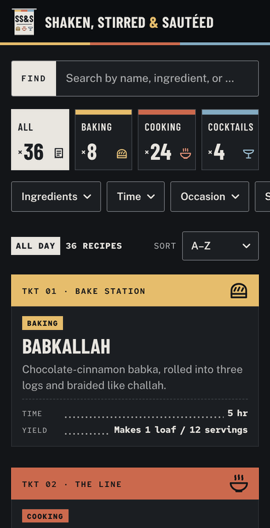
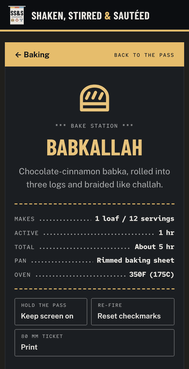
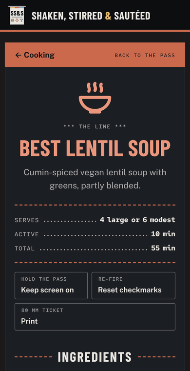
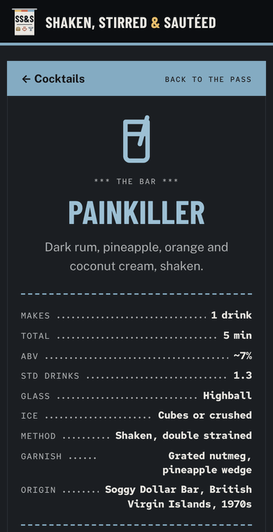

Orderup.
Muted's kitchen. Sans's reading. One rail.
The two round-three Order Ups, merged. Tickets still hang on a flat rail with torn edges, ticket numbers, receipt leaders and a SENT stamp. But every sentence you read while cooking is now set in a calm, open sans, the palette sits between warm paper and cool ink, and every recipe has its own little printed pictogram.
Your notes, fired
- Reading in sans"Monospace feels like work to read"
Descriptions, ingredients, steps, notes, buttons and filter chips are in Public Sans at 17px with generous leading. Monospace survives only where alignment is the point: quantities, ticket numbers, labels, the receipt facts and timers.
- Both Order Ups, one paletteLiked muted and sans, couldn't choose
Muted's warm paper, putty counter, ochre, brick and slate; Sans's cooler, inkier charcoal and its calmer greys. The result is warm to look at and crisp to read.
- Three stations, three lightnesses"Likes colour coding"
Bake is light ochre, the line is mid brick, the bar is dark slate, so they stay apart even in greyscale. Tabs, ticket headers, badges and the whole recipe page take the station colour through one
--sectionproperty. - A pictogram for every recipe"Liked the idea of icons"
29 bold, flat glyphs drawn like a thermal printer would print them: one 2px stroke, rounded caps, a 24px grid. They sit on every ticket header and large on the recipe ticket.
- Dark is a kitchen display"Cooks at night · dark must be excellent"
Graphite panels with hairlines instead of torn paper, station colours lifted for the dark, warm off-white text at 13:1. No neon, no glow, no pure black.
- The strike stays"Crossed-out steps are really helpful"
Checked ingredients and sent steps get a 2px line through every line of text in the station colour, plus the SENT stamp on the step number.
- Flat, alwaysNo 3D, grain, gold or fussy trim
No bevels, shadows, gradients-as-depth, halftones or doubled type. Character comes from structure (rail, tickets, leaders), a few barcodes and the kitchen voice.
Every recipe is an order ticket
The home page is the rail at the pass: open tickets hanging in rows, numbered, each printed with its station and its pictogram. Tap one and it comes off the rail as a single long ticket you read top to bottom while you fire it: highlight the step you're on, stamp the ones you've sent.
Flat rail and clips, torn ticket edges, TKT numbers and station names, dotted receipt leaders, the SENT stamp, a FIRING highlighter and the 80 mm receipt print.
A clear grotesk for every sentence, cooler ink and calmer greys, larger type in the steps and lists. Condensed caps only for names and headings.
Glassware for drinks, a course or bake type for food. Stamp-like, one weight, readable at 24px on a phone and at 76px on the recipe ticket.
The SS&S ticket
A ticket on the rail: the three station colours across the top, SS&S in Barlow Condensed, and the three station pictograms printed where a receipt would put its items. It doubles as the app icon and favicon.
Header lockup: the mark at 38px, the name in Barlow Condensed 700 caps, the ampersand in ochre. The header's bottom stripe shows all three stations, and turns solid in the station colour on a station page.
Paper, ink and three stations
Every pairing that carries text passes WCAG AA; most pass AAA. Station fills are set a lightness step apart, so baking, cooking and cocktails never rely on hue alone.
Light · paper tickets on a putty counter
- Hex
- #DDD9D1
- Ink on it
- 10.8:1
- Hex
- #FBFAF7
- Ink
- 14.6:1
- Ink-2
- 6.6:1
- Hex
- #23262A
- On paper
- 14.6:1
- Hex
- #565A60
- On paper
- 6.6:1
- Hex
- #6B6E72
- On paper
- 4.9:1
- Hex
- #23262A
- Text
- 13.5:1
| Station | Fill | Text on fill | Ink (text) | Ink contrast | Fill as UI | Highlighter | Ink on it |
|---|---|---|---|---|---|---|---|
| Baking Bake station | #D29B3C L 0.37 | 6.1:1 #23262A on fill | #7A5414 | 6.5:1 text on paper | 2.4:1 fill vs paper | #F3E1B5 | 11.8:1 ink on highlighter |
| Cooking The line | #A9462E L 0.13 | 5.6:1 #FBFAF7 on fill | #9A3F29 | 6.5:1 text on paper | 5.6:1 fill vs paper | #F2D5C9 | 11.0:1 ink on highlighter |
| Cocktails The bar | #2D4A5C L 0.06 | 9.0:1 #FBFAF7 on fill | #2D4A5C | 9.0:1 text on paper | 9.0:1 fill vs paper | #D3E0E7 | 11.3:1 ink on highlighter |
Dark · a calm kitchen display
- Hex
- #131518
- Ink on it
- 14.7:1
- Hex
- #1C1F23
- Ink
- 13.3:1
- Ink-2
- 7.3:1
- Hex
- #E9E6E0
- On paper
- 13.3:1
- Hex
- #A9ACB0
- On paper
- 7.3:1
- Hex
- #8E9196
- On paper
- 5.2:1
- Hex
- #0D0F11
- Text
- 15.4:1
| Station | Fill | Text on fill | Ink (text) | Ink contrast | Fill as UI | Highlighter | Ink on it |
|---|---|---|---|---|---|---|---|
| Baking Bake station | #E6BD6C L 0.54 | 10.3:1 #131518 on fill | #E8C47D | 9.9:1 text on paper | 9.3:1 fill vs paper | #3A3324 | 10.0:1 ink on highlighter |
| Cooking The line | #CC6A4E L 0.24 | 5.0:1 #131518 on fill | #EC977D | 7.3:1 text on paper | 4.5:1 fill vs paper | #3B2823 | 11.1:1 ink on highlighter |
| Cocktails The bar | #84ABC2 L 0.38 | 7.5:1 #131518 on fill | #9DC0D4 | 8.6:1 text on paper | 6.8:1 fill vs paper | #22323C | 10.6:1 ink on highlighter |
Ratios are WCAG 2.x contrast. "UI" marks a fill judged as a non-text shape (3:1). The ochre fill is never used for text on paper; the darker ochre ink (#7A5414) is. In dark mode every fill carries dark text and every station ink is lifted above 7:1.
Read in sans. Name in caps. Count in mono.
TOTAL ........... About 5 hr T+ 25 to 30 min
Why Public Sans
Four reading faces were set against the same babka step in light and dark at phone size. Public Sans won on the night test: a large x-height, open apertures and even colour at 17px, without the narrowness that makes Barlow tiring in long steps.
Crisp and industrial (Order Up Sans). Slightly tight at small sizes; heavier texture in long steps.
Pairs with the mono, but light and small on the line; greys out in dark mode.
Matches the condensed titles, but narrow and thin for paragraphs at night.
Large x-height, open forms, steady in dark mode, clearly distinct from the condensed caps.
Spacing tokens
Also: --r-key 3px on keys and fields, --line-w 1.5px outlines, --tooth 14 × 7px torn edge. Tap targets are 44px or taller; ingredient rows 52px; steps 74px.
29 printed pictograms
Drawn like a thermal printer's glyphs: one 2px stroke with rounded caps and joins, on a 24px grid with a 2px margin, flat, no fills except tiny details. Shown at 56, 32 and 24px in their station ink (see also the contact sheet). Each file is pure black so CSS masks can paint it any colour.

Mapping rules
- Override. A recipe's own
"icon": "<key>"field wins, if it names one of the 29 keys. - Chosen per recipe. Today's 36 recipes each have a hand-picked key (babkallah → loaf, zombie → tiki-mug, grenadine → bottle, garlic-paste → garlic …).
- Cocktails: glass → glassware. nick|nora → nick-nora · tiki → tiki-mug · highball|collins → highball · coupe → coupe · martini → martini · rocks|old fashioned → rocks. No glass: components → bottle, drinks → rocks.
- Baking: type → icon. cakes → cake · cookies-bars → bars · pies-tarts → tart · breads, pastry → loaf · breakfast-bakes → donut · fillings-creams → jar
- Cooking: course → icon. soup → soup · salad → salad · sauce → sauce · base → pasta · drink → mug · protein → chicken · side → greens · full-meal → rice-bowl · sweet → apple · breakfast → loaf
- Fallback. baking → loaf · cooking → soup · cocktails → rocks.
Adoption note (from icons.js): on adoption this logic moves into scripts/build-index.mjs (writing an icon field into recipes/index.json) and home.js / recipe.js render the span. Until then the preview pages load _shared/icons.js.
Live specimens
Everything below is real markup styled by theme.css.
Course
The words you act on stay plain; the kicker above is kitchen voice. Pressed keys fill with the station colour.
- Warm the milk over low heat, swirling, just until lukewarm.⏱ 5 to 10 min
- Whisk in the sugar, yolks and vanilla. Add the flour and stir into a shaggy dough.⏱ 8 to 10 min✓ Smooth and supple, no longer shiny
- Butter a large bowl, set the dough in it and cover.✓ Doubled in size
Three recipe tickets, side by side
The whole recipe page takes its section colour from :has(.back[href*="cat=…"]): the header stripe, the counter tint, the ticket band, the pictogram, the title, rules, checkboxes, step numbers and the highlighter.
Service at night
Designed, not inverted. Graphite #131518 counter and #1C1F23 panels (never pure black), warm off-white ink at 13:1, hairline panels instead of torn paper, and station colours lifted so they glow just enough. The header goes darker than the page so the recipe stays the brightest thing on screen.




Forced dark specimens: the real components with the dark tokens, whatever this screen prefers.
- Baking
Babkallah
Chocolate-cinnamon babka, rolled into three logs and braided like challah.
- Cooking
Best lentil soup
Cumin-spiced vegan lentil soup with greens, partly blended.
- Cocktails
Painkiller
Dark rum, pineapple, orange and coconut cream, shaken.
- Sweat the onion, carrot and celery.
- Add lentils and stock; simmer.⏱ 25 to 30 min
A little kitchen, never a costume
Kitchen words go on labels and kickers, in mono caps, where they add character without getting in the way. The words you act on (buttons, recipe text, filters) stay plain.
- Keep kitchen words to labels: one or two words, mono caps.
- Leave button labels plain: "Keep screen on", "Reset checkmarks".
- Write recipe text the way you'd say it at the stove.
- Put jargon in instructions ("fire the mirepoix, chef").
- Shout: no exclamation marks, no all-caps sentences.
- Add a barcode to every surface. There is one per page, at the end.
Swap the ticket roll
Theme
Copy
theme.cssoverassets/style.css. It covers every selector and state the site's JS uses: light and dark, print, safe areas, the bottom sheet and its desktop slip, focus-visible and reduced motion.Fonts and icons
Copy
fonts/(4 woff2 files, all SIL OFL) andicons/(29 SVGs) toassets/fonts/andassets/icons/. The paths in the stylesheet are relative, so they keep working next to it.Header and colour
Replace the emoji
.brand-markwith the inline SVG ticket frompreview/index.html, settheme-colorto #23262A (light) and #0D0F11 (dark), and uselogo.svgas the icon.<meta name="theme-color" content="#23262A" media="(prefers-color-scheme: light)"> <meta name="theme-color" content="#0D0F11" media="(prefers-color-scheme: dark)">Icons in the data
Move
iconFor()and its tables fromstyle-guides/_shared/icons.jsintoscripts/build-index.mjsand writeiconinto eachrecipes/index.jsonentry (an"icon"in a recipe file overrides it).// scripts/build-index.mjs, where each index entry is built entry.icon = iconFor(recipe);Icons in the markup
Two small edits render the span the theme masks. Then drop the
_shared/icons.jsscript.// assets/home.js · card() <a class="card" data-icon="${esc(r.icon || "")}" href="recipe.html?r=…"> … <div class="card-body"> <span class="card-icon" aria-hidden="true"></span> // assets/recipe.js · render() root.dataset.icon = r.icon || ""; // or look it up from index.json … <span class="recipe-icon" aria-hidden="true"></span> <h1>${esc(r.title)}</h1>Check
Run the site, open each section in light and dark, mark two ingredients and two steps, and print a recipe: it should come out as an 80 mm receipt.